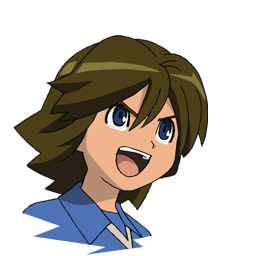
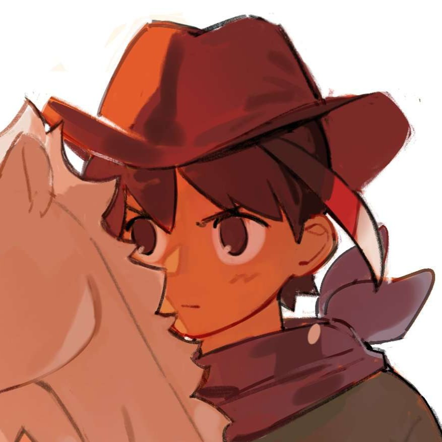
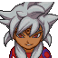
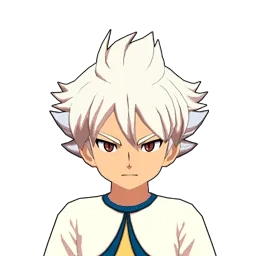

Byron Love
"Has oido a los angeles batir sus alas"
Byron Love, conocido en Japón como Afrodi, es uno de los delanteros más talentosos de Inazuma Eleven. Debuta como capitán del Instituto Zeus y destaca por su elegancia, velocidad y sus poderosas técnicas celestiales.

paolo bianchi
"El fútbol une a las personas más allá de las fronteras."
Paolo Bianchi es el capitán de Orpheus, la selección nacional de Italia. Reconocido por su liderazgo y deportividad, se convierte en uno de los rivales más respetados de Raimon durante el torneo internacional FFI.

tezcat
"El destino de este partido ya está escrito."
Tezcat es uno de los jugadores más misteriosos de Inazuma Eleven. Su personalidad tranquila y su enorme habilidad en el campo lo convierten en una pieza clave durante los viajes a través del tiempo.

Vash Lancer
"El fútbol es una batalla que debe ganarse a cualquier precio."
Vash Lancer es el capitán del Equipo Ogro, un grupo de jugadores provenientes de 80 años en el futuro que viajan al pasado con el objetivo de destruir al Raimon y eliminar el fútbol para siempre. Su enorme poder, disciplina militar y técnicas devastadoras lo convierten en uno de los rivales más peligrosos a los que se enfrenta Mark Evans y sus compañeros.

Bailong
"La fuerza de un dragón corre por mis venas"
Bailong, conocido también como Hakuryuu, es uno de los delanteros más poderosos de Inazuma Eleven GO. Su talento excepcional y su espíritu competitivo lo convierten en un rival temible capaz de cambiar el rumbo de cualquier partido.